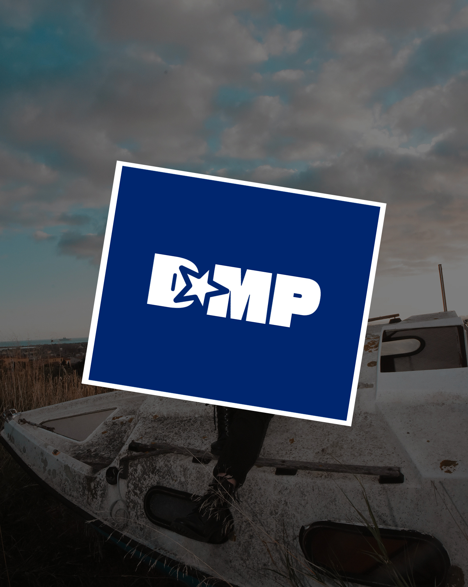
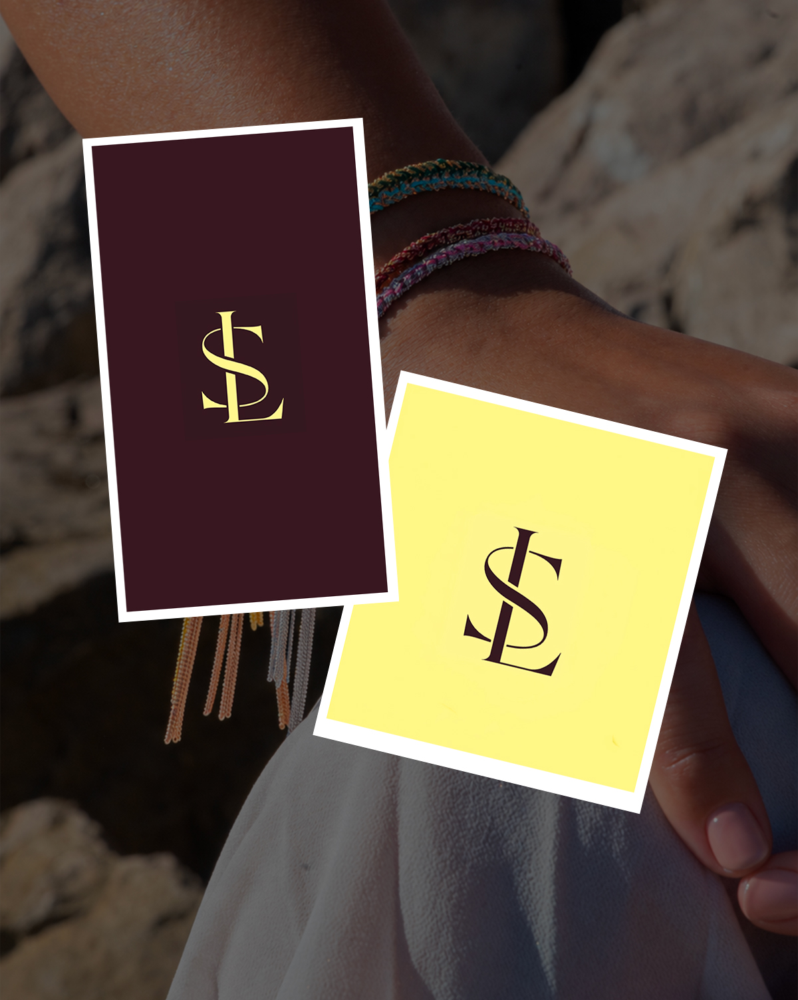
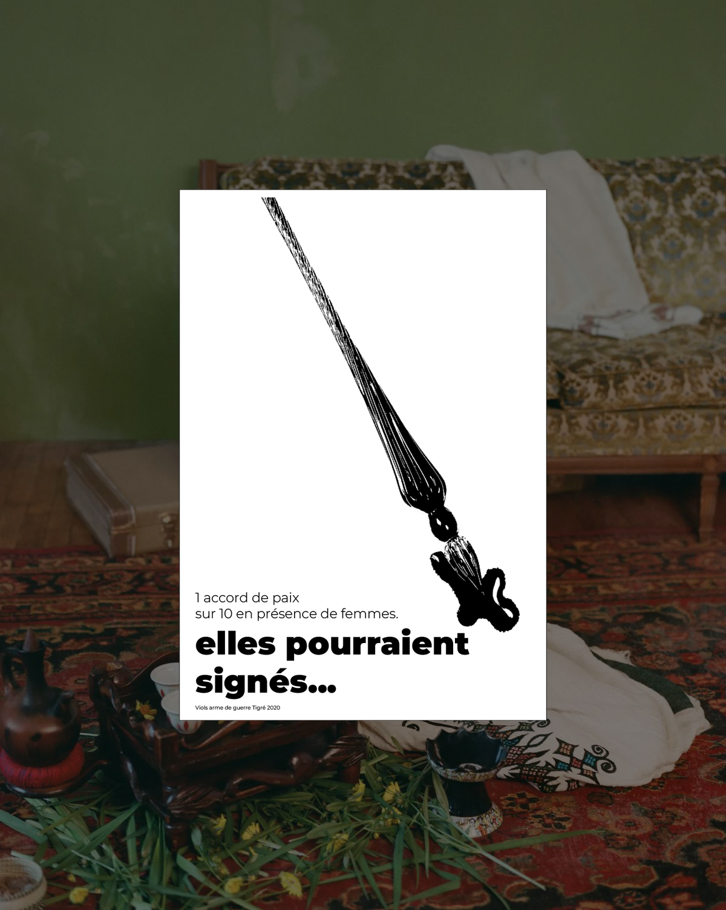
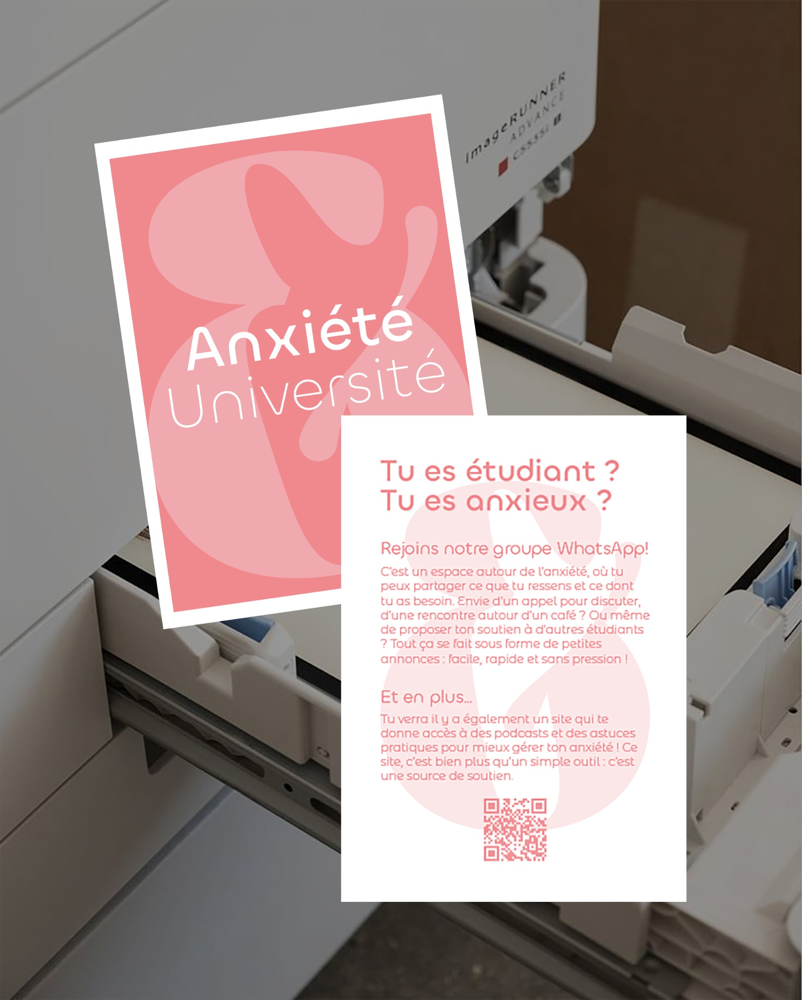
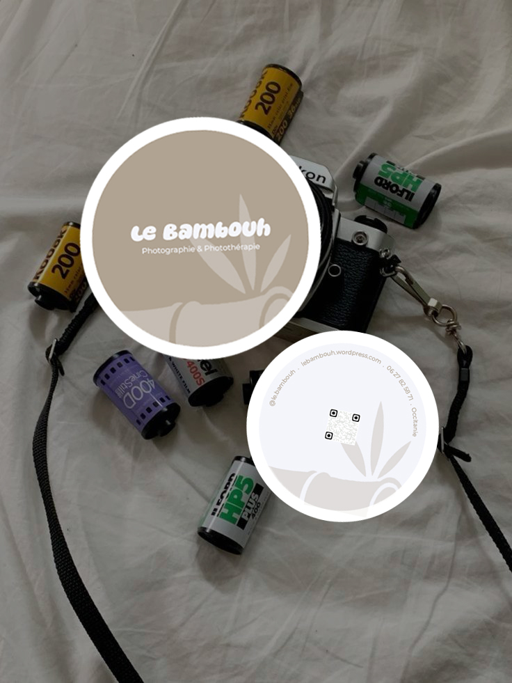
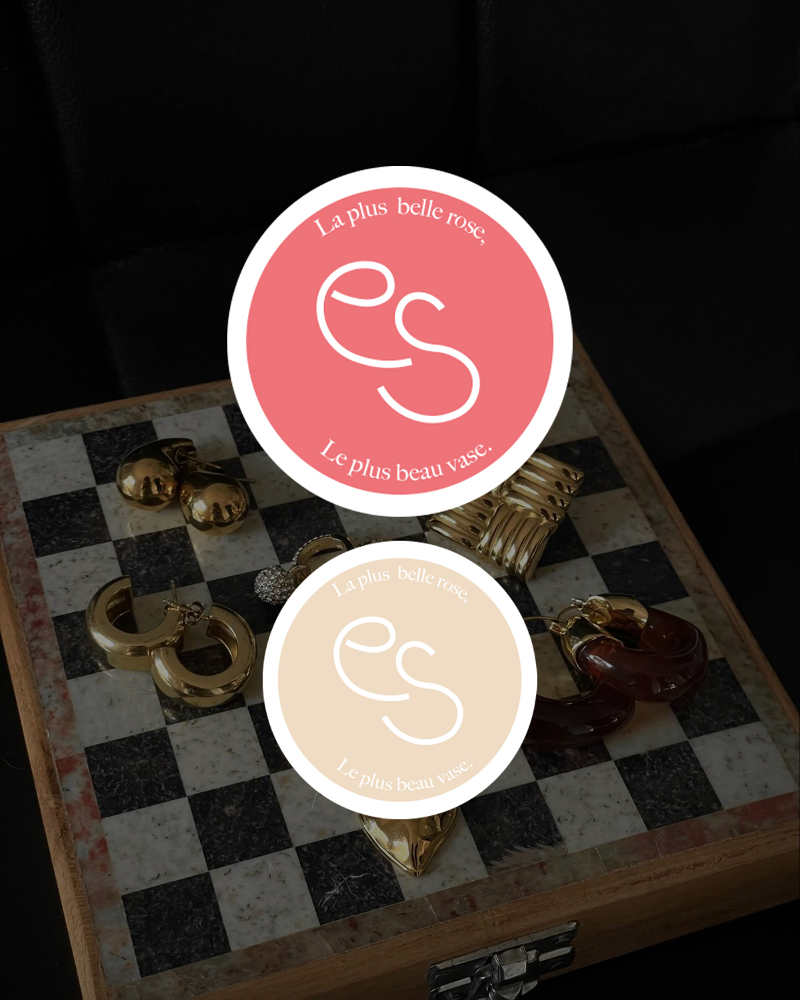
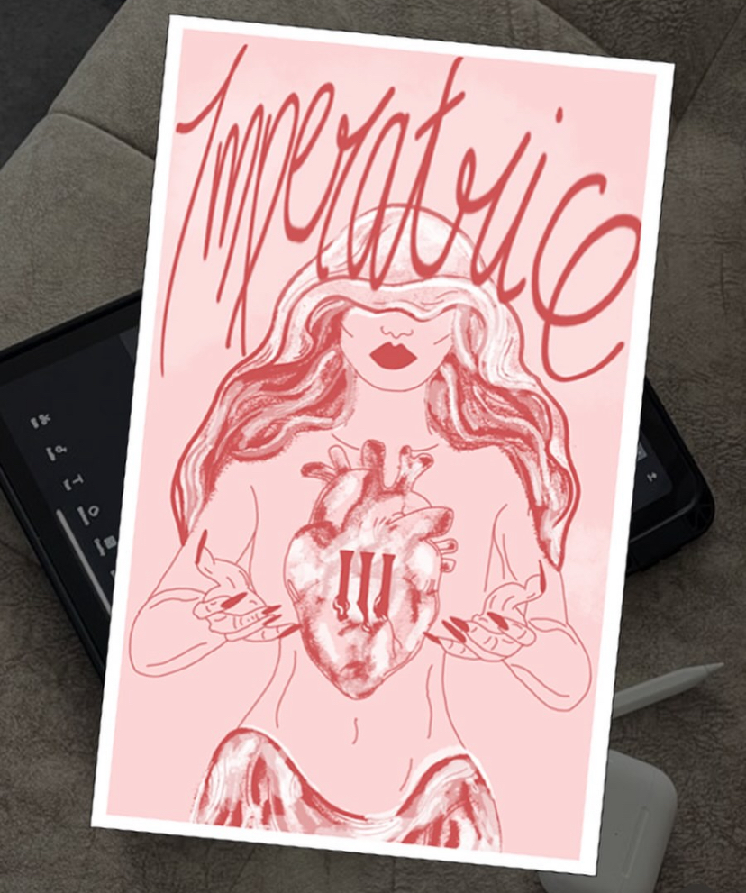

Agence photo DMP
Identité visuelle, stratégie réseaux sociaux, publications et stories, animation de TikTok et réalisation de vidéos lors des shootings.
Une sélection pour découvrir ma démarche, mes compétences et leurs applications.
14 projets
Aucun projet dans cette catégorie pour le moment.

Identité visuelle, stratégie réseaux sociaux, publications et stories, animation de TikTok et réalisation de vidéos lors des shootings.

Chargée de communication de la marque : identité visuelle, stratégie réseaux sociaux, organisation de shootings et animation des stories au quotidien.

Un fanzine collectif sur l’IA, codé en HTML / CSS et imprimé en risographie. Ma contribution explore le collapse de l’IA à travers une grille qui se fissure.

Une série d’affiches militantes pour rendre visibles les violences sexuelles au Tigré et soutenir la parole des survivantes.

Textures, superposition et découpe pour traduire l’univers photographique d’une exposition solo à Sète.

Un festival et des outils graphiques pour réhabiliter l’espace public et rendre la rue plus sûre pour les femmes.

Trois directions graphiques pour créer une affiche d’exposition qui accroche le regard et explore le bizarre.

Repenser les goodies universitaires avec une cartographie et des supports graphiques utiles au quotidien.

Une identité visuelle, des flyers et un site pour créer du lien entre étudiant·es anxieux·ses et favoriser des moments de rencontre près de Nîmes.

Deux pistes de cartes de visite et un travail sur la perception pour affirmer son identité de photographe thérapeutique.

Un même logo décliné en nude, rose poudré et terracotta pour exprimer douceur, délicatesse et caractère.

Une illustration personnelle sur Procreate, nourrie par l’ésotérisme, les symboles et le féminin sacré.

Un écrit visuel sur le regard des autres en rave, quand le lâcher-prise devient vigilance.

Un haïku traduit en photomontage : une exploration de l’évanescence, entre superpositions, textures et sensations.